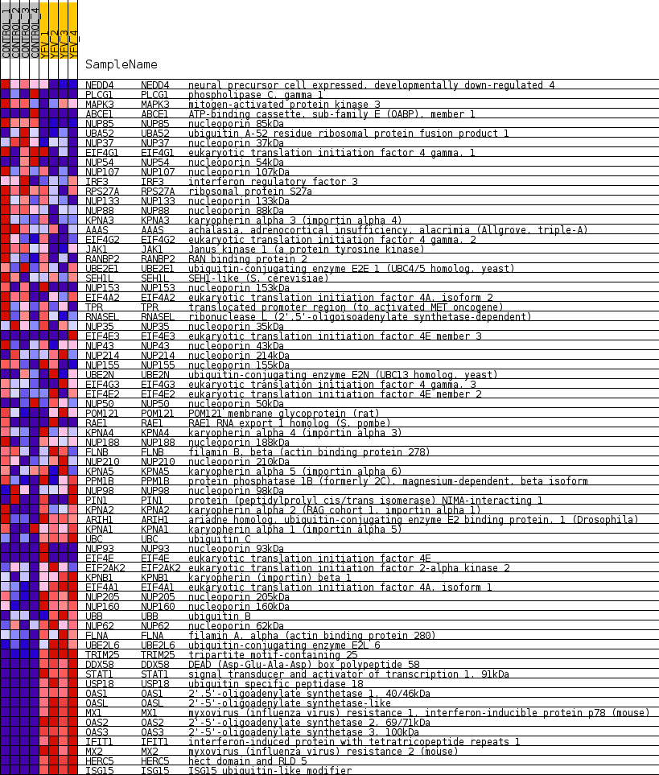
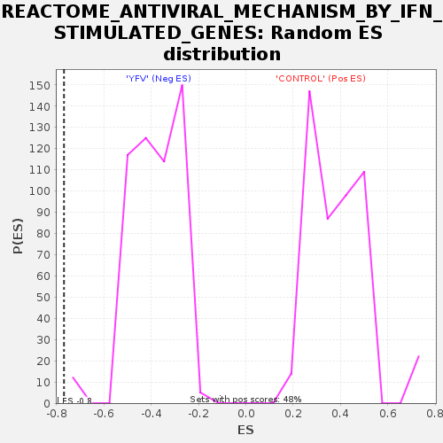

Profile of the Running ES Score & Positions of GeneSet Members on the Rank Ordered List
| Dataset | MATRIZ_GSE99081_collapsed_to_symbols.gsea_CLASE_99081.cls#CONTROL_versus_YFV |
| Phenotype | gsea_CLASE_99081.cls#CONTROL_versus_YFV |
| Upregulated in class | YFV |
| GeneSet | REACTOME_ANTIVIRAL_MECHANISM_BY_IFN_STIMULATED_GENES |
| Enrichment Score (ES) | -0.7683372 |
| Normalized Enrichment Score (NES) | -1.9952747 |
| Nominal p-value | 0.0 |
| FDR q-value | 0.012000002 |
| FWER p-Value | 0.0 |
| SYMBOL | TITLE | RANK IN GENE LIST | RANK METRIC SCORE | RUNNING ES | CORE ENRICHMENT | |
|---|---|---|---|---|---|---|
| 1 | NEDD4 | neural precursor cell expressed, developmentally down-regulated 4 | 725 | 0.731 | -0.0353 | No |
| 2 | PLCG1 | phospholipase C, gamma 1 | 1364 | 0.558 | -0.0676 | No |
| 3 | MAPK3 | mitogen-activated protein kinase 3 | 1456 | 0.538 | -0.0662 | No |
| 4 | ABCE1 | ATP-binding cassette, sub-family E (OABP), member 1 | 1710 | 0.500 | -0.0754 | No |
| 5 | NUP85 | nucleoporin 85kDa | 1902 | 0.496 | -0.0807 | No |
| 6 | UBA52 | ubiquitin A-52 residue ribosomal protein fusion product 1 | 1969 | 0.488 | -0.0785 | No |
| 7 | NUP37 | nucleoporin 37kDa | 2593 | 0.398 | -0.1118 | No |
| 8 | EIF4G1 | eukaryotic translation initiation factor 4 gamma, 1 | 2766 | 0.372 | -0.1176 | No |
| 9 | NUP54 | nucleoporin 54kDa | 2828 | 0.363 | -0.1167 | No |
| 10 | NUP107 | nucleoporin 107kDa | 2975 | 0.346 | -0.1212 | No |
| 11 | IRF3 | interferon regulatory factor 3 | 3858 | 0.253 | -0.1725 | No |
| 12 | RPS27A | ribosomal protein S27a | 4134 | 0.232 | -0.1865 | No |
| 13 | NUP133 | nucleoporin 133kDa | 4450 | 0.207 | -0.2033 | No |
| 14 | NUP88 | nucleoporin 88kDa | 4544 | 0.198 | -0.2064 | No |
| 15 | KPNA3 | karyopherin alpha 3 (importin alpha 4) | 4699 | 0.183 | -0.2136 | No |
| 16 | AAAS | achalasia, adrenocortical insufficiency, alacrimia (Allgrove, triple-A) | 4883 | 0.167 | -0.2227 | No |
| 17 | EIF4G2 | eukaryotic translation initiation factor 4 gamma, 2 | 5000 | 0.159 | -0.2278 | No |
| 18 | JAK1 | Janus kinase 1 (a protein tyrosine kinase) | 5037 | 0.156 | -0.2281 | No |
| 19 | RANBP2 | RAN binding protein 2 | 5581 | 0.107 | -0.2602 | No |
| 20 | UBE2E1 | ubiquitin-conjugating enzyme E2E 1 (UBC4/5 homolog, yeast) | 5622 | 0.104 | -0.2614 | No |
| 21 | SEH1L | SEH1-like (S. cerevisiae) | 5687 | 0.100 | -0.2640 | No |
| 22 | NUP153 | nucleoporin 153kDa | 5902 | 0.084 | -0.2762 | No |
| 23 | EIF4A2 | eukaryotic translation initiation factor 4A, isoform 2 | 5974 | 0.078 | -0.2795 | No |
| 24 | TPR | translocated promoter region (to activated MET oncogene) | 6048 | 0.072 | -0.2831 | No |
| 25 | RNASEL | ribonuclease L (2',5'-oligoisoadenylate synthetase-dependent) | 6165 | 0.063 | -0.2895 | No |
| 26 | NUP35 | nucleoporin 35kDa | 6808 | 0.021 | -0.3289 | No |
| 27 | EIF4E3 | eukaryotic translation initiation factor 4E member 3 | 9451 | -0.000 | -0.4923 | No |
| 28 | NUP43 | nucleoporin 43kDa | 9760 | -0.014 | -0.5112 | No |
| 29 | NUP214 | nucleoporin 214kDa | 10733 | -0.078 | -0.5703 | No |
| 30 | NUP155 | nucleoporin 155kDa | 10739 | -0.079 | -0.5696 | No |
| 31 | UBE2N | ubiquitin-conjugating enzyme E2N (UBC13 homolog, yeast) | 10897 | -0.094 | -0.5781 | No |
| 32 | EIF4G3 | eukaryotic translation initiation factor 4 gamma, 3 | 10945 | -0.098 | -0.5797 | No |
| 33 | EIF4E2 | eukaryotic translation initiation factor 4E member 2 | 11057 | -0.106 | -0.5852 | No |
| 34 | NUP50 | nucleoporin 50kDa | 11180 | -0.118 | -0.5912 | No |
| 35 | POM121 | POM121 membrane glycoprotein (rat) | 11246 | -0.124 | -0.5936 | No |
| 36 | RAE1 | RAE1 RNA export 1 homolog (S. pombe) | 11252 | -0.124 | -0.5923 | No |
| 37 | KPNA4 | karyopherin alpha 4 (importin alpha 3) | 11273 | -0.127 | -0.5919 | No |
| 38 | NUP188 | nucleoporin 188kDa | 11329 | -0.132 | -0.5936 | No |
| 39 | FLNB | filamin B, beta (actin binding protein 278) | 11510 | -0.148 | -0.6028 | No |
| 40 | NUP210 | nucleoporin 210kDa | 11772 | -0.172 | -0.6167 | No |
| 41 | KPNA5 | karyopherin alpha 5 (importin alpha 6) | 11877 | -0.181 | -0.6208 | No |
| 42 | PPM1B | protein phosphatase 1B (formerly 2C), magnesium-dependent, beta isoform | 12068 | -0.200 | -0.6299 | No |
| 43 | NUP98 | nucleoporin 98kDa | 12083 | -0.201 | -0.6282 | No |
| 44 | PIN1 | protein (peptidylprolyl cis/trans isomerase) NIMA-interacting 1 | 12104 | -0.203 | -0.6268 | No |
| 45 | KPNA2 | karyopherin alpha 2 (RAG cohort 1, importin alpha 1) | 12666 | -0.261 | -0.6581 | No |
| 46 | ARIH1 | ariadne homolog, ubiquitin-conjugating enzyme E2 binding protein, 1 (Drosophila) | 13567 | -0.375 | -0.7089 | No |
| 47 | KPNA1 | karyopherin alpha 1 (importin alpha 5) | 13898 | -0.425 | -0.7238 | No |
| 48 | UBC | ubiquitin C | 14182 | -0.479 | -0.7351 | No |
| 49 | NUP93 | nucleoporin 93kDa | 14495 | -0.500 | -0.7479 | No |
| 50 | EIF4E | eukaryotic translation initiation factor 4E | 14505 | -0.500 | -0.7419 | No |
| 51 | EIF2AK2 | eukaryotic translation initiation factor 2-alpha kinase 2 | 14757 | -0.555 | -0.7502 | No |
| 52 | KPNB1 | karyopherin (importin) beta 1 | 15038 | -0.635 | -0.7593 | Yes |
| 53 | EIF4A1 | eukaryotic translation initiation factor 4A, isoform 1 | 15149 | -0.672 | -0.7574 | Yes |
| 54 | NUP205 | nucleoporin 205kDa | 15295 | -0.740 | -0.7567 | Yes |
| 55 | NUP160 | nucleoporin 160kDa | 15312 | -0.749 | -0.7480 | Yes |
| 56 | UBB | ubiquitin B | 15642 | -0.918 | -0.7564 | Yes |
| 57 | NUP62 | nucleoporin 62kDa | 15644 | -0.920 | -0.7445 | Yes |
| 58 | FLNA | filamin A, alpha (actin binding protein 280) | 15764 | -1.054 | -0.7382 | Yes |
| 59 | UBE2L6 | ubiquitin-conjugating enzyme E2L 6 | 16021 | -1.679 | -0.7322 | Yes |
| 60 | TRIM25 | tripartite motif-containing 25 | 16114 | -2.360 | -0.7072 | Yes |
| 61 | DDX58 | DEAD (Asp-Glu-Ala-Asp) box polypeptide 58 | 16212 | -4.043 | -0.6607 | Yes |
| 62 | STAT1 | signal transducer and activator of transcription 1, 91kDa | 16215 | -4.153 | -0.6069 | Yes |
| 63 | USP18 | ubiquitin specific peptidase 18 | 16216 | -4.180 | -0.5526 | Yes |
| 64 | OAS1 | 2',5'-oligoadenylate synthetase 1, 40/46kDa | 16221 | -4.298 | -0.4970 | Yes |
| 65 | OASL | 2'-5'-oligoadenylate synthetase-like | 16228 | -4.654 | -0.4369 | Yes |
| 66 | MX1 | myxovirus (influenza virus) resistance 1, interferon-inducible protein p78 (mouse) | 16229 | -4.704 | -0.3758 | Yes |
| 67 | OAS2 | 2'-5'-oligoadenylate synthetase 2, 69/71kDa | 16231 | -4.784 | -0.3137 | Yes |
| 68 | OAS3 | 2'-5'-oligoadenylate synthetase 3, 100kDa | 16232 | -4.808 | -0.2512 | Yes |
| 69 | IFIT1 | interferon-induced protein with tetratricopeptide repeats 1 | 16233 | -4.809 | -0.1887 | Yes |
| 70 | MX2 | myxovirus (influenza virus) resistance 2 (mouse) | 16234 | -4.817 | -0.1261 | Yes |
| 71 | HERC5 | hect domain and RLD 5 | 16235 | -4.842 | -0.0632 | Yes |
| 72 | ISG15 | ISG15 ubiquitin-like modifier | 16236 | -4.880 | 0.0002 | Yes |

